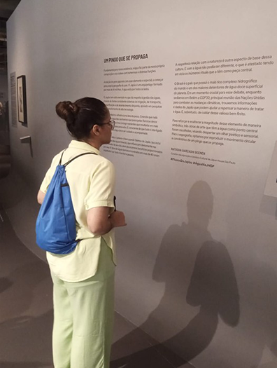

Exposição e muita água
Em uma manhã de domingo, me programei com antecedência para passear e conhecer dois locais na Avenida Paulista. A primeira parada foi a Japan House São Paulo. A fachada é simplesmente linda, já os preços das comidas nem tanto. Mas calma, vamos por parte.
Eu fui à exposição chamada “FLUXOS – O JAPÃO E A ÁGUA”. Havia vários textos explicando qual era aquela água – eu não fazia ideia que existia tantas diferentes –, mapas mostrando os 52 vulcões que têm no Japão – e mais uma vez, eu não fazia ideia da quantidade que existe –, e muito mais informações interessantes.
Mas eu não poderia deixar de falar sobre: a maior edificação de desvio subterrâneo de inundações do mundo! É simplesmente impressionante o que fizeram no Japão, é quase um outro mundo, só que no subterrâneo. Não tenho palavras para descrever o quão incrível é a estrutura.
Porém, como eu disse no começo, nem tudo é lindo. Se você realmente quiser experimentar a comida lá, prepare a carteira, pois o preço é bem salgado. Quanto ao sabor, eu não vou poder opinar, já que não comi nada na Japan House São Paulo – quem sabe na próxima vez, não é? –.
Mas a experiência de visitar o local e de ir à exposição é 4.9 de 5 estrelas – menos 0.1 porque tinha muito texto para ler –. Não vejo a hora de voltar e descobrir mais assuntos interessantes e importantes.

Visitando a exposição “FLUXOS – O JAPÃO E A ÁGUA” na Japan House São Paulo.